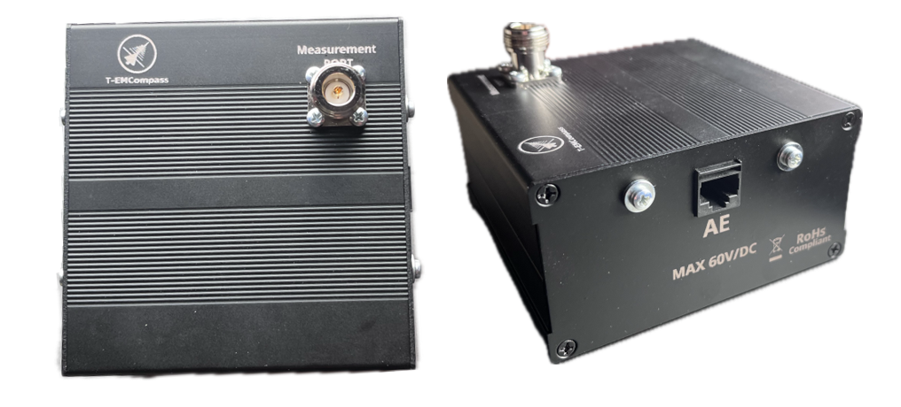
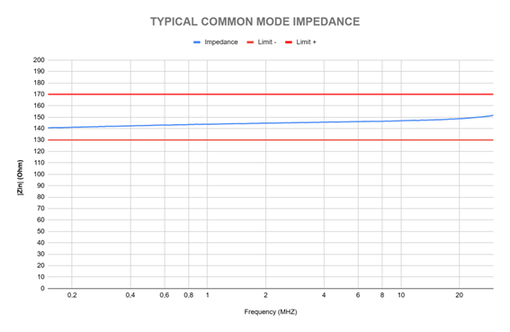
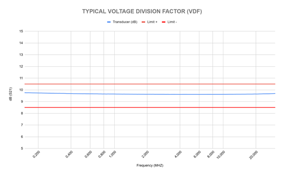

ASYMMETRIC ARTIFICIAL NETWORKS (AAN) T8
ASYMMETRIC ARTIFICIAL NETWORKS (AAN)
MODEL: AAN FOR (1/2/3 OR 4) UNSHIELDED PAIRS
TECHNICAL DATA
| Parameter | Value |
|---|---|
| Frequency Range | 150 kHz - 30 MHz |
| Impedance | 150 Ω ± 20 Ω |
| Voltage Division Ratio (VDF) | 9.5 dB ± 1 dB |
| EuT, AE Terminals | RJ45 Terminals |
| Measuring Port | 50Ω N-TYPE |
| Max. Voltage | 60V DC |
| Max. Current | 1A per pair |
| Outer dimensions (W x H x D) | (106 x 73.7 x 100 mm) |
| Operating Temperature | +10 °C to +35 °C |
TYPICAL COMMON MODE IMPEDANCE

TYPICAL VOLTAGE DIVISION FACTOR (VDF)
